- Example 1:
First, the user ApplyOnline.
Then, he UploadsPassport, so that the company can EvaluateApplication.
Once the company EvaluateApplication, it decides between RejectApplication or AcceptApplication.
If they AcceptApplication, they then have to PayForFees, before PreparingAndDeliveringPassport.
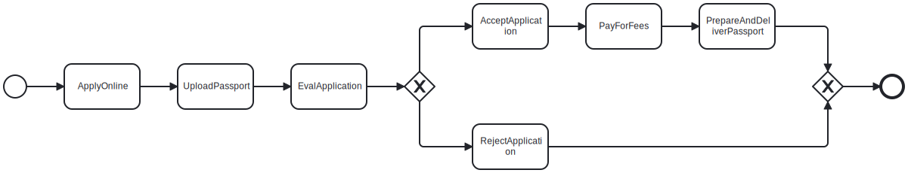
- Example 2:
First, the user AppliesOnline.
Then, in a loop necessarily the user UploadsPassport before the system ChecksQuality, and optionally the system RequiresNewUpload.
After ChecksQuality, the company EvaluatesApplication.
Then, the company has the choice to RejectApplication or AcceptApplication.
If the company AcceptApplication, then they have to PayForFees and PreparePassport, after what they DeliverPassport.
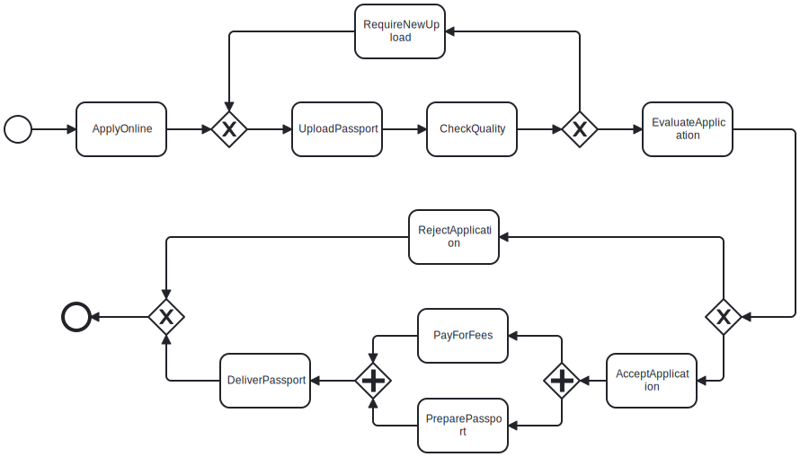
- Example 3:
First, the system ProcessApplication.
Then, if the client has an account, the system RetrieveCustomerProfile and AnalyseCustomerProfile.
Otherwise, the banker CreateProfile.
Once done, the system IdentifyAccountType, and the banker PrepareAccountOpening.
After that, the user ReceiveSupportDocuments, the banker UpdateInfoRecords, and the system also performs some BackgroundVerification at the same time than ReviewApplication.
Finally, the bank either NotifyRejection, or GenerateAccountNumber, SendStarterKit, and ActivateAccount.
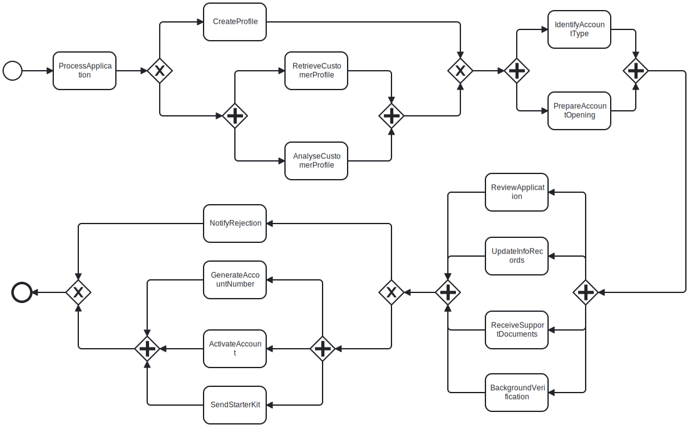
- Example 4:
The process starts with a loop in which the user necessarily FillInForms before undergo MedicalCheckUp and process to either a VisaApplication or a VisaVerification, while optionally receiving a Reject.
Once this information has been received, the company either ValidatePartially the documents, and send a message to the user to AskForAdditionalDocuments, or Validate.
Finally, the system UpdatePersonnelDatabase, which allows the financial service to AnticipateWages, and the human resources service to PrepareWelcomeKit, after what the system ArchiveAllDocuments.
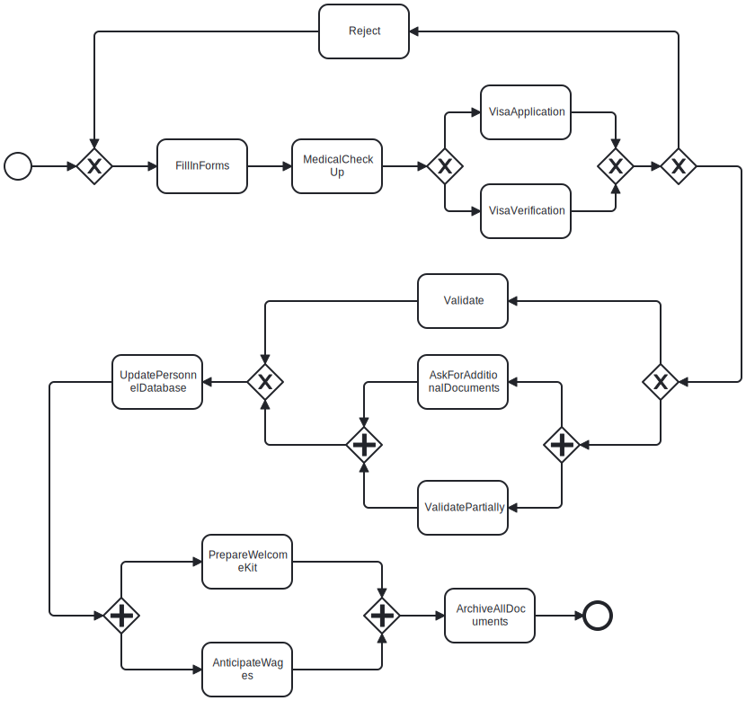
- Example 5:
The MissionPaperwork can be done in parallel of the FlightBooking, the VisaDelivery, and the HotelReservation.
The HotelReservation precedes the Vaccination, and everything must be done before ReturnDocuments.
Finally Reimbursement and ArchiveDocs can start.
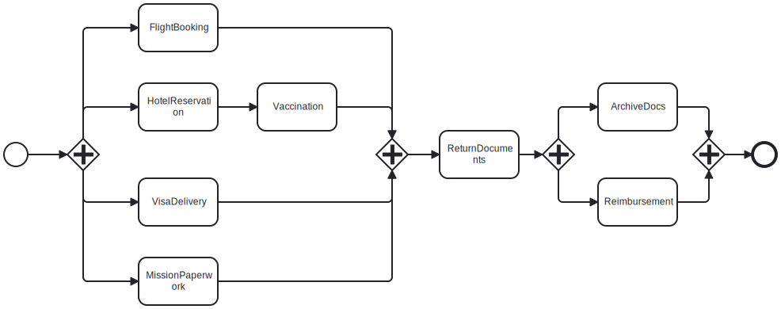
- Example 6:
DecideNormalPostOrSpecialCarrier executes before a choice between either RequestQuotes preceding AssignCarrier, or CheckExtraInsurance before either TakeOutExtraInsurance or FillInPostLabel.
In parallel of this, PackageGoods is executed.
Finally, MovePackageToPickArea starts.
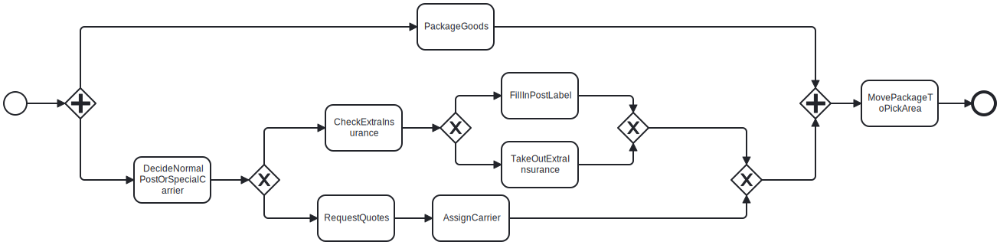
- Example 7:
At the beginning, the secretary EvaluatePatientRequest.
Then, the doctor either ExamineAndInterviewPatient, MakeDiagnosis and ConductDiagnosticWorkup one after the other, or EvaluateHospitalisation in order to chose between TreatExacerbations or PrescribeTherapy.
Finally, he PlanExamination.
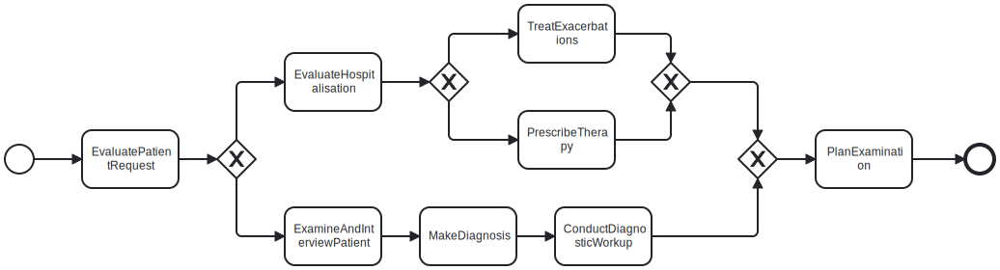
- Example 8:
First, the user EvaluateFirmnessColorAndDamages.
Then, the machine ReadPalletLabels before ReadTemperatureAndHumidity.
After that, the system RegisterPalletStorage and simultaneously AdjustRedfrigeratorTemperature before StorePalletInRefrigerator.
These steps allow a worker to SelectSampleToAnalyse, which is followed by a technician that AnalyseSample.
Finally, depending on the result of the analysis, two mutually exclusive paths can occur.
In the first one, the system sequentially ActivateAlarm, RegisterPalletRejection and DiscardPallet.
In the second one, the system ManageShipment before either MovePalletToNonPriorityArea, or ReducePrice before MovePalletToPriorityArea and finally RegisterPalletShipment.
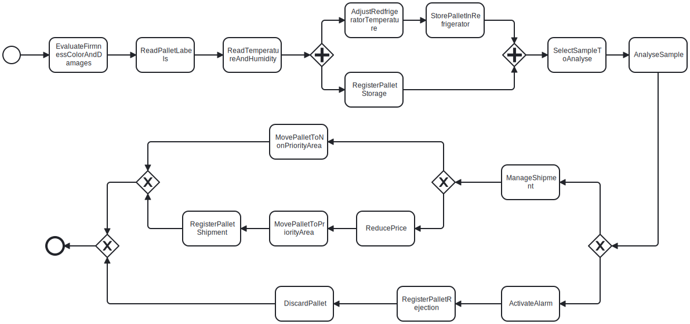
- Example 9:
First, the user FillInForms, the doctor performs a MedicalCheckup, and the administration does the VisaApplication.
Then, the user SubmitDocuments.
If DocumentsRejected, nothing happens.
Otherwise, if DocumentsAccepted, the administration proceeds to the ArchiveAllDocuments, and the system UpdatePersonnelDatabase so that the staff can AnticipateWages and PrepareWelcomeKit.
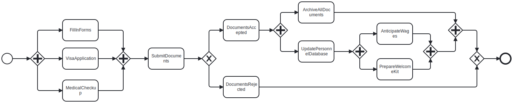
- Example 10:
First, the administration has to give the MissionAuthorization.
While the user BookFlight, the administrative staff can do the MissionPaperwork.
After the booking his flight, the user is allowed to ReserveHotel, TakeInsurance, CheckLocalTransportation, and DoVaccination.
Once he has ReserveHotel and finished his MissionPaperwork, he can start the VisaProcess.
In the end, the administration ArchiveMission.
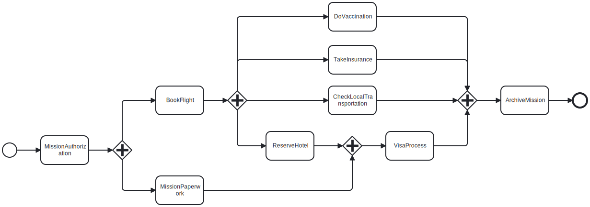
- Example 11:
First of all, an employee CollectGoods brought by a client.
Then, in parallel, the client PayForDelivery and the employee PrepareParcel.
The company can either DeliverByCar or DeliverByDrone (depending on the distance for example).
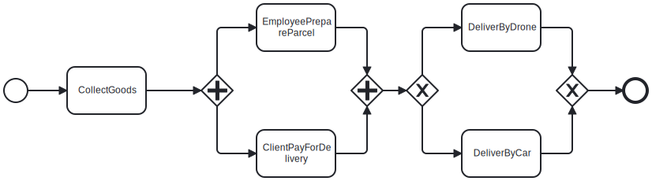